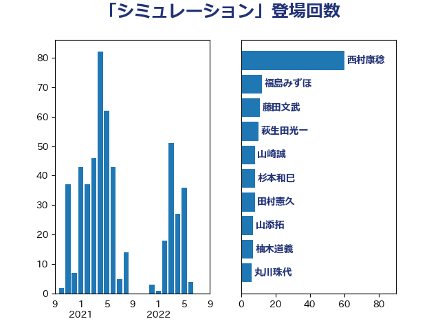

単語「シミュレーション」

| 西村康稔 | 自由民主党 | 60 回 |
| 福島みずほ | 社会民主党 | 12 回 |
| 藤田文武 | 日本維新の会 | 11 回 |
| 萩生田光一 | 自由民主党 | 10 回 |
| 山崎誠 | 立憲民主党 | 8 回 |
| 杉本和巳 | 日本維新の会 | 8 回 |
| 田村憲久 | 自由民主党 | 8 回 |
| 山添拓 | 日本共産党 | 7 回 |
| 柚木道義 | 立憲民主党 | 7 回 |
| 丸川珠代 | 自由民主党 | 6 回 |
| 蓮舫 | 立憲民主党 | 6 回 |
| 伊藤孝恵 | 国民民主党 | 5 回 |
| 古川俊治 | 自由民主党 | 5 回 |
| 吉田宣弘 | 公明党 | 5 回 |
| 大西健介 | 立憲民主党 | 5 回 |
| 宮本徹 | 日本共産党 | 4 回 |
| 福山哲郎 | 立憲民主党 | 4 回 |
| 辻元清美 | 立憲民主党 | 4 回 |
| 阿部弘樹 | 日本維新の会 | 4 回 |
| 音喜多駿 | 日本維新の会 | 4 回 |
| 上川陽子 | 自由民主党 | 3 回 |
| 勝部賢志 | 立憲民主党 | 3 回 |
| 吉田統彦 | 立憲民主党 | 3 回 |
| 小西洋之 | 立憲民主党 | 3 回 |
| 山際大志郎 | 自由民主党 | 3 回 |
| 岸田文雄 | 自由民主党 | 3 回 |
| 末松信介 | 自由民主党 | 3 回 |
| 梅村聡 | 日本維新の会 | 3 回 |
| 梶山弘志 | 自由民主党 | 3 回 |
| 熊谷裕人 | 立憲民主党 | 3 回 |
| 片山大介 | 日本維新の会 | 3 回 |
| 牧島かれん | 自由民主党 | 3 回 |
| 赤羽一嘉 | 公明党 | 3 回 |
| 伊藤俊輔 | 立憲民主党 | 2 回 |
| 和田義明 | 自由民主党 | 2 回 |
| 城井崇 | 立憲民主党 | 2 回 |
| 大石あきこ | れいわ新選組 | 2 回 |
| 大野敬太郎 | 自由民主党 | 2 回 |
| 太栄志 | 立憲民主党 | 2 回 |
| 山下芳生 | 日本共産党 | 2 回 |
| 山谷えり子 | 自由民主党 | 2 回 |
| 島尻安伊子 | 自由民主党 | 2 回 |
| 後藤茂之 | 自由民主党 | 2 回 |
| 徳永エリ | 立憲民主党 | 2 回 |
| 松川るい | 自由民主党 | 2 回 |
| 枝野幸男 | 立憲民主党 | 2 回 |
| 柳ヶ瀬裕文 | 日本維新の会 | 2 回 |
| 柴田巧 | 日本維新の会 | 2 回 |
| 池畑浩太朗 | 日本維新の会 | 2 回 |
| 泉健太 | 立憲民主党 | 2 回 |
| 浦野靖人 | 日本維新の会 | 2 回 |
| 渡辺周 | 立憲民主党 | 2 回 |
| 石井苗子 | 日本維新の会 | 2 回 |
| 石垣のりこ | 立憲民主党 | 2 回 |
| 芳賀道也 | 国民民主党 | 2 回 |
| 茂木敏充 | 自由民主党 | 2 回 |
| 金子恭之 | 自由民主党 | 2 回 |
| 長妻昭 | 立憲民主党 | 2 回 |
| 馬場伸幸 | 日本維新の会 | 2 回 |
| 三木亨 | 自由民主党 | 1 回 |
| 上田清司 | 国民民主党 | 1 回 |
| 中村裕之 | 自由民主党 | 1 回 |
| 中西祐介 | 自由民主党 | 1 回 |
| 中谷一馬 | 立憲民主党 | 1 回 |
| 伊藤孝江 | 公明党 | 1 回 |
| 勝俣孝明 | 自由民主党 | 1 回 |
| 古川元久 | 国民民主党 | 1 回 |
| 吉川元 | 立憲民主党 | 1 回 |
| 吉田はるみ | 立憲民主党 | 1 回 |
| 嘉田由紀子 | 無所属 | 1 回 |
| 國場幸之助 | 自由民主党 | 1 回 |
| 土田慎 | 自由民主党 | 1 回 |
| 堀場幸子 | 日本維新の会 | 1 回 |
| 塩崎彰久 | 自由民主党 | 1 回 |
| 大塚耕平 | 国民民主党 | 1 回 |
| 宮内秀樹 | 自由民主党 | 1 回 |
| 寺田静 | 無所属 | 1 回 |
| 小林鷹之 | 自由民主党 | 1 回 |
| 小泉進次郎 | 自由民主党 | 1 回 |
| 小熊慎司 | 立憲民主党 | 1 回 |
| 小里泰弘 | 自由民主党 | 1 回 |
| 尾身朝子 | 自由民主党 | 1 回 |
| 山口壯 | 自由民主党 | 1 回 |
| 山崎正恭 | 公明党 | 1 回 |
| 岸信夫 | 自由民主党 | 1 回 |
| 川田龍平 | 立憲民主党 | 1 回 |
| 平木大作 | 公明党 | 1 回 |
| 徳永久志 | 立憲民主党 | 1 回 |
| 有村治子 | 自由民主党 | 1 回 |
| 末松義規 | 立憲民主党 | 1 回 |
| 杉尾秀哉 | 立憲民主党 | 1 回 |
| 東徹 | 日本維新の会 | 1 回 |
| 松本尚 | 自由民主党 | 1 回 |
| 森屋隆 | 立憲民主党 | 1 回 |
| 武田良太 | 自由民主党 | 1 回 |
| 池田佳隆 | 自由民主党 | 1 回 |
| 河野太郎 | 自由民主党 | 1 回 |
| 津島淳 | 自由民主党 | 1 回 |
| 浅野哲 | 国民民主党 | 1 回 |
| 清水真人 | 自由民主党 | 1 回 |
| 清水貴之 | 日本維新の会 | 1 回 |
| 玄葉光一郎 | 立憲民主党 | 1 回 |
| 田中健 | 国民民主党 | 1 回 |
| 田嶋要 | 立憲民主党 | 1 回 |
| 田畑裕明 | 自由民主党 | 1 回 |
| 福岡資麿 | 自由民主党 | 1 回 |
| 福重隆浩 | 公明党 | 1 回 |
| 穀田恵二 | 日本共産党 | 1 回 |
| 竹内真二 | 公明党 | 1 回 |
| 篠原豪 | 立憲民主党 | 1 回 |
| 簗和生 | 自由民主党 | 1 回 |
| 紙智子 | 日本共産党 | 1 回 |
| 緑川貴士 | 立憲民主党 | 1 回 |
| 美延映夫 | 日本維新の会 | 1 回 |
| 菅家一郎 | 自由民主党 | 1 回 |
| 藤丸敏 | 自由民主党 | 1 回 |
| 藤巻健太 | 日本維新の会 | 1 回 |
| 西岡秀子 | 国民民主党 | 1 回 |
| 角田秀穂 | 公明党 | 1 回 |
| 赤池誠章 | 自由民主党 | 1 回 |
| 足立康史 | 日本維新の会 | 1 回 |
| 道下大樹 | 立憲民主党 | 1 回 |
| 鈴木隼人 | 自由民主党 | 1 回 |
| 階猛 | 立憲民主党 | 1 回 |
| 鬼木誠 | 立憲民主党 | 1 回 |